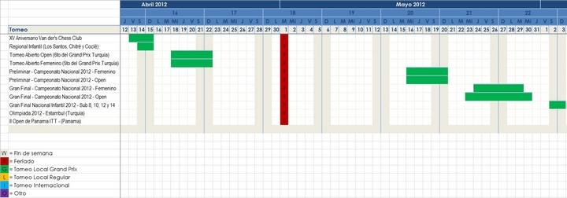

Calendario de Eventos 2012
|
Torneo |
Del |
Al |
|
XV Aniversario Van der's Chess Club |
13 de abril de 2012 |
15 de abril de 2012 |
|
Regional Infantil (Los Santos, Chitré y Coclé) |
14 de abril de 2012 |
15 de abril de 2012 |
|
Abierto Femenino (5to del Gran Prix Turquía) |
18 de abril de 2012 |
22 de abril de 2012 |
|
Abierto Open (6to del Gran Prix Turquía) |
18 de abril de 2012 |
22 de abril de 2012 |
|
Preliminar - Campeonato Nacional 2012 – Femenino |
16 de mayo de 2012 |
20 de mayo de 2012 |
|
Preliminar - Campeonato Nacional 2012 – Open |
16 de mayo de 2012 |
20 de mayo de 2012 |
|
Gran Final - Campeonato Nacional 2012 – Femenino |
24 de mayo de 2012 |
29 de mayo de 2012 |
|
Gran Final - Campeonato Nacional 2012 – Open |
23 de mayo de 2012 |
30 de mayo de 2012 |
|
Gran Final Nacional Infantil 2012 – Sub 8, 10, 12 y 14 |
2 de junio de 2012 |
3 de junio de 2012 |
|
Olimpiada 2012 - Estambul (Turquía) |
27 de agosto de 2012 |
10 de septiembre de 2012 |
|
II Open de Panama ITT - (Panama) |
27 de noviembre de 2012 |
1 de diciembre de 2012 |
 Nota: La FAP se reserva el derecho de cambiar fechas y lugares. Si desea, puede descargar el Calendario FAP 2012 y para visualizarlo utilizar el Visor de Excel.